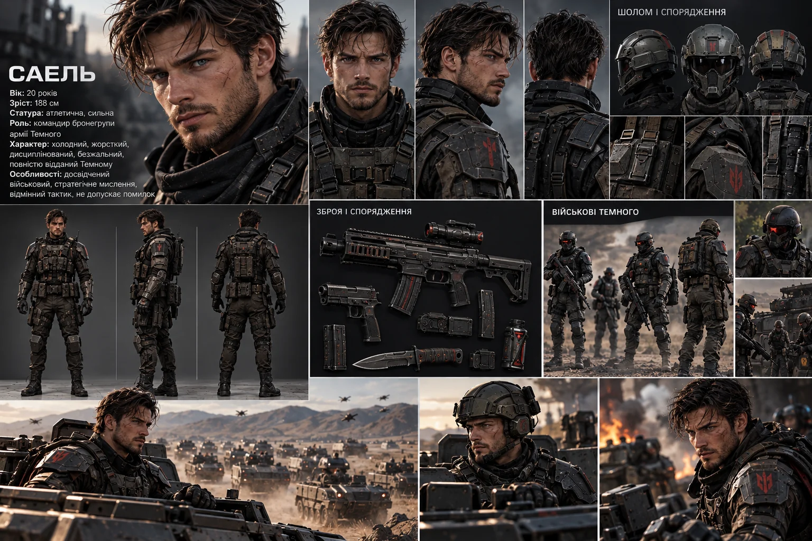

ОСНОВНА ІНФОРМАЦІЯ
Боєць, який не припускається легковажності
Саєль служить у війську Темного. Це не командир бронегрупи, а звичайний боєць армії. Його вирізняють сувора дисципліна, холодний розрахунок і беззастережна відданість Темному.
Вік: 20 років
Зріст: 188 см
Належність: армія Темного
Статус: боєць, не командир
Характер: холодний, суворий, дисциплінований, безжальний
Навички: досвідчений військовий, добре розуміється на тактиці
ХАРАКТЕР І ПОВЕДІНКА
Самоконтроль і повна відданість
Саєль не схильний до вагань і не дозволяє емоціям впливати на виконання завдання. Він мислить тактично, уважно оцінює обставини й діє жорстко, коли цього вимагає ситуація.
Його військова підготовка та дисципліна роблять його небезпечним противником, але не змінюють його місця в ієрархії: Саєль залишається бійцем, а не командиром підрозділу.
ВІЗУАЛЬНИЙ КАНОН
Зовнішність і спорядження
Молодий чоловік із темно-каштановим скуйовдженим волоссям, синьо-зеленими очима та короткою щетиною. Носить темне тактичне спорядження зі знаками армії Темного.
Уточнення канону
Напис «командир бронегрупи» на одному з попередніх візуальних макетів є помилковим і не належить до канону персонажа.